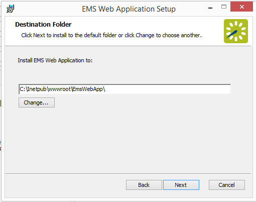
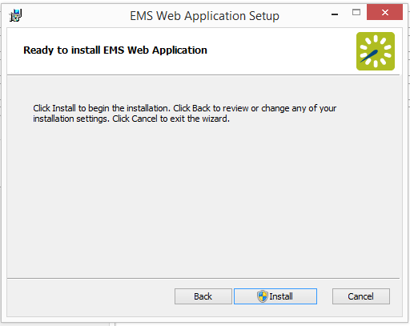

Install or Upgrade to the EMS Web App
- Manually any uninstall previous versions of VEMS or on your web server.
- Verify that Requirements and Prerequisites have been met.
- Download the EMSWebApplication.msi file onto the web server that will be running .
- Run EMSWebApplication.msi.
- The first screen welcomes you to the Setup Wizard. Click Next to begin the installation process.

- In the Destination Folder screen, select the destination folder.

The installation process will create a new physical directory on your web server based on the destination folder path you entered. Click Next.
Tip: Choosing a folder above other than the default will create a new physical directory on your web server at that location. If your organization uses Internet Information Services (IIS), make sure that the user account used for IIS (IUSR and/or IIS_IUSRS) has access to this new installation directory. To learn more, See Also Windows Server 2008/2008 R2 Web Server Setup Guide or Windows Server 2012/2012 R2 Web Server Setup Guide.
Note: should not be installed in the same physical directory as other EMS web-based products OR under a site running another version of VEMS or .
- In the SQL Server and database information screen that appears, enter your SQL Instance Name and your Database Name and click Next.
Tip: The database name is typically “EMS.”

- In the Virtual Directory information screen that appears, the Virtual Directory Name will default to the destination folder you specified (in Step 6 above). It is recommended that you keep the default setting. The installation process will create a virtual directory on your web server based on the virtual directory entered (“EmsWebApp” in the example above). Click Next.

Warning: should not be installed in the same virtual directory as other EMS web-based products OR under a site running another version of .
- On the Ready to install EMS Web Application screen that appears, click Install.

- On the Completed the EMS Web App Setup Wizard screen that appears, click Finish.